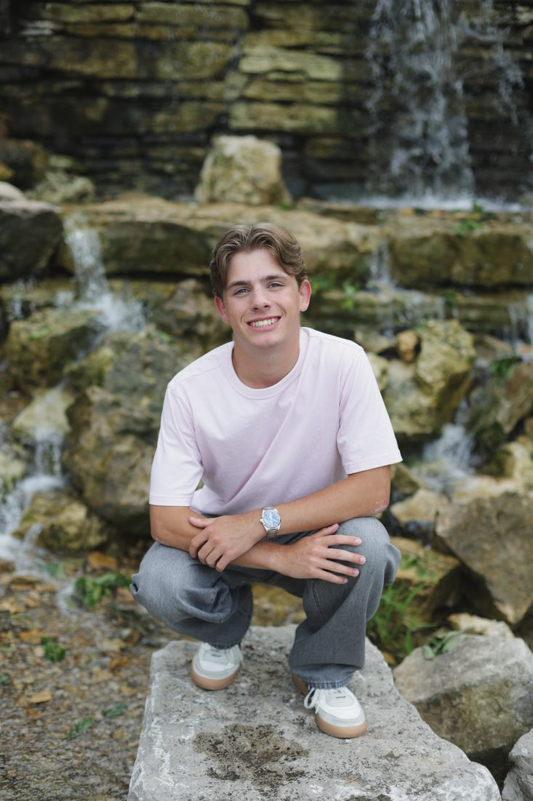

Marrow Coffee Roasters
A single-origin roastery site built around a warm, tactile identity, carried through to an online ordering flow.
I'm Kelen McDonald. I design and build sites for small businesses and independent creators. Bespoke work, not a template with your logo swapped in.
Or write to contact@kelenmcdonald.com
Taking on a small number of new projects. Remote, clients anywhere.

Selected work
Designed and built end to end: identity, layout, and the code that ships it.
All three are self-directed concept projects: speculative pieces I designed and built to demonstrate range. They are not completed client engagements, and nothing here reports real client results.
A single-origin roastery site built around a warm, tactile identity, carried through to an online ordering flow.
A portfolio site for a two-person architecture practice, built so the project photography leads and the interface stays out of the way.
A small-batch textile shop with a product grid designed to feel like flipping through a printed catalog.
What I do
Most projects use all three. Some only need one, and that's fine too.
Brand identity
Logo, color, and type worked out together, so the identity holds up across every page instead of falling apart the moment it leaves the letterhead.
Web design
It starts with what the site actually needs to do. Structure first, then the surface — every screen designed, not assembled from parts that happened to be lying around.
Development
Written from scratch, with no page-builder plugins and no bloated templates. The result is a site that loads quickly, works on every screen, and can be changed without fighting it.
Understanding what the site actually needs to do, for the people who'll actually use it.
About
I design and build websites for small businesses and independent creators. Every project starts the same way: understanding what the site actually needs to do, for the people who'll actually use it.
Then I sketch, design, and build it by hand — no drag-and-drop templates standing between your business and how it looks online.
“Studio” is framing, not a team. It’s me, start to finish, which is also why I keep the list of projects short.
Start a project
A sentence or two about your business and what the site needs to do is plenty to start. I read every message myself.